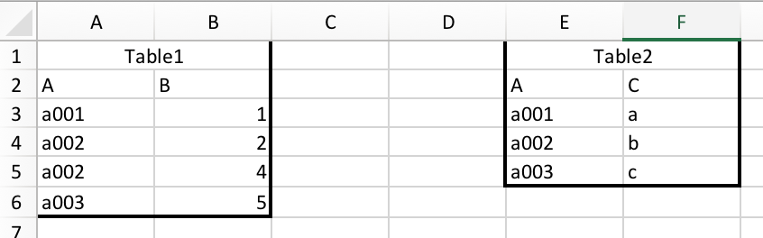
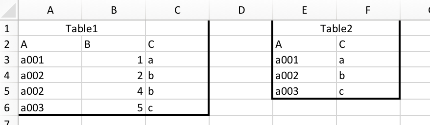

Intro to Pandas
Overview
Teaching: 60 min
Exercises: 0 minQuestions
How do I read a file
What is pandas
How to work with table-like data in Python like Excel
Objectives
Describe what the Python Data Analysis Library (Pandas) is.
Load the Python Data Analysis Library (Pandas).
What’s in our data?
Describe what a DataFrame is in Python.
Access and summarize data stored in a DataFrame.
Merge two dataframes, understand different types of join
Perform basic mathematical operations and summary statistics on data in a Pandas DataFrame.
Create pivot table
Working With Pandas DataFrames in Python
We can automate the process of performing data manipulations in Python. It’s efficient to spend time building the code to perform these tasks because once it’s built, we can use it over and over on different datasets that use a similar format. This makes our methods easily reproducible. We can also easily share our code with colleagues and they can replicate the same analysis.
Our Data
Please download the data for this workshop tbd. It is in zip format, please unzip it, and you will see an .csv file. There are two .csv files, soda.csv and invoice.csv.
Our database is about soda sales from the vendors to stores. Here is all types of data in the database:
| Columns | Data Type | Description | File |
|---|---|---|---|
| County_id | INTEGER | Unique id for each county | invoice.csv |
| County_Name | String | Name of county | invoice.csv |
| City_Name | String | Name of the city that the county is in | invoice.csv |
| Vendor_id | INTEGER | Unique id for each vendor | invoice.csv |
| Vendor_Name | String | Name of the vendor | invoice.csv |
| Store_id | INTEGER | Unique id for each store | invoice.csv |
| Store_Name | String | Name of the store | invoice.csv |
| Address | String | Address of the store | invoice.csv |
| Zip_Code | INTEGER | Zip code of the store | invoice.csv |
| Invoice_id | String | Unique id for each invoice | invoice.csv |
| Date | String | Date of the invoice | invoice.csv |
| Bottle_Sold | INTEGER | Number of bottle sold in the invoice | invoice.csv |
| Item_id | INTEGER | Unique id for each item (soda) | both |
| Category | String | Category of soda | item.csv |
| Item_Description | String | Name of the item (soda) | item.csv |
| Pack | INTEGER | Number of bottles that the soda usually sells for | item.csv |
| Bottle_Volume_ml | Float | Volumn of the soda in ml | item.csv |
| Bottle_Cost | Float | Cost of one bottle | item.csv |
| Bottle_Retail_Price | Float | Retile price for one bottle | item.csv |
csv can be opened with Excel. However, Excel has a limit of 1,048,576 rows by 16,384 columns. Our invoice.csv data contains about 9 million rows of data, almost hitted the Excel limit. (Try to open it with Excel, how long it take to load it?)
It took me more than a half minute to just open the file (with a 5th gen i5 processor computer). It would be slow and difficult to do further analytics.
Excel is not very good when dealing with scalable data. Moreover, Excel is not very good at tracing modification records. On the other hand, a huge advantage of using python is that, without graphic interface, the processing of data will be much faster. Since you do your analytics with code, you can easily keep a record of what you have done. To deal with table-like data, we usually use a module called Pandas. In this section, you will learn the basics of Pandas. Since most of you are business students, I will also show you how to perform some frequent used Excel functionalities with Pandas.
black x6 phantom, white x6 panda
Pandas in Python
One of the best options for working with tabular data in Python is to use the Python Data Analysis Library (a.k.a. Pandas). The Pandas library provides data structures, produces high quality plots with matplotlib and integrates nicely with other libraries that use NumPy (which is another Python library) arrays.
Python doesn’t load all of the libraries available to it by default. We have to
add an import statement to our code in order to use library functions.
import pandas as pd
Each time we call a function that’s in a library, we use the syntax
LibraryName.FunctionName. Adding the library name with a . before the
function name tells Python where to find the function. In the example above, we
have imported Pandas as pd. This means we don’t have to type out pandas each
time we call a Pandas function.
Reading CSV Data Using Pandas
We will begin by locating and reading our survey data which are in CSV format. CSV stands for Comma-Separated Values and is a common way store formatted data. Other symbols my also be used, so you might see tab-separated, colon-separated or space separated files. It is quite easy to replace one separator with another, to match your application. The first line in the file often has headers to explain what is in each column. CSV (and other separators) make it easy to share data, and can be imported and exported from many applications, including Microsoft Excel.
We can use Pandas’ read_csv function to pull the file directly into a DataFrame.
So What’s a DataFrame?
A DataFrame is a 2-dimensional data structure that can store data of different
types (including characters, integers, floating point values, factors and more)
in columns. It is similar to a spreadsheet or an SQL table or the data.frame in
R. A DataFrame always has an index (0-based). An index refers to the position of
an element in the data structure.
# Note that pd.read_csv is used because we imported pandas as pd
pd.read_csv("soda.csv")
The above command yields 930508 rows × 19 columns. The first column is the index of the DataFrame (which is not included in the 19 columns). The index is used to identify the position of the data, but it is not an actual column of the DataFrame.
It looks like the read_csv function in Pandas read our file properly. However,
we haven’t saved any data to memory so we can work with it.We need to assign the
DataFrame to a variable. Remember that a variable is a name for a value, such as x,
or data. We can create a new object with a variable name by assigning a value to it using =.
Let’s call the imported data into two DataFrames soda and inv:
soda = pd.read_csv("soda.csv")
inv = pd.read_csv("invoice.csv")
Notice when you assign the imported DataFrame to a variable, Python does not
produce any output on the screen. We can view the value of the soda
object by typing its name into the Python command prompt.
soda
And you will see the dataframe.
Note: if the output is too wide to print on your narrow terminal window, you may see something
slightly different as the large set of data scrolls past.
Never fear, all the data is there, if you scroll up. Selecting just a few rows, so it is
easier to fit on one window, you can see that pandas has neatly formatted the data to fit
our screen/
You can also use the head(n) function displays the first n lines of a file. It will defaultly show the first 5 rows of the dataframe if you don’t fill in any numbers:
soda.head()
Exploring Our Data
Again, we can use the type function to see what kind of thing soda is:
>>> type(soda)
<class 'pandas.core.frame.DataFrame'>
As expected, it’s a DataFrame (or, to use the full name that Python uses to refer
to it internally, a pandas.core.frame.DataFrame).
What kind of things does soda and inv contain? DataFrames have an attribute
called dtypes that answers this:
>>> soda.dtypes
Item_id int64
Item_Description object
Category object
Pack int64
Bottle_Volume_ml float64
Bottle_Cost float64
Bottle_Retail_Price float64
dtype: object
>>> inv.dtypes
Invoice_id object
Date object
Item_id int64
Vendor_id int64
Vendor_Name object
Store_id int64
Store_Name object
Address object
City_Name object
Zip_Code int64
County_id int64
County_Name object
Bottles_Sold int64
dtype: object
All the values in a column have the same type. For example, Bottles_Sold have type
int64, which is a kind of integer. Bottle_Cost has decimals and it have type float64.
The object type doesn’t have a very helpful name, but in
this case it represents strings.
Useful Ways to View DataFrame objects in Python
There are many ways to summarize and access the data stored in DataFrames, using attributes and methods provided by the DataFrame object.
To access an attribute, use the DataFrame object name followed by the attribute
name df_object.attribute. Using the DataFrame soda and attribute
columns, an index of all the column names in the DataFrame can be accessed
with soda.columns.
Methods are called in a similar fashion using the syntax df_object.method().
As an example, soda.head() gets the first few rows in the DataFrame
soda using the head() method. With a method, we can supply extra
information in the parens to control behaviour.
Let’s look at the data using these.
Try the following methods yourself:
Using our DataFrame
soda, try out the attributes & methods below to see what they return.
soda.columns
soda.shapeTake note of the output ofshape- what format does it return the shape of the DataFrame in?HINT: More on tuples, here.
soda.tail()
Selecting Data
To get one column, you can do df_object.column_name or df_object[column_name]. It will return a Series object.
To get multiple columns, you can do df_object[list_of_column_names]. And it will return a DataFrame object.
For example, you can get Store_id and Store_Name by:
inv[["Store_id", "Store_Name"]]
Although you can select one column of the DataFrame with both of the following lines, they does not give you the same data type. You can check the datatype with type().
inv[["Store_id"]]
inv["Store_id"]
Let’s get a list of all the categories. The pd.unique function tells us all of
the unique values in the Category column.
pd.unique(soda['Category'])
To see how many unique categories are there, we can do:
len(pd.unique(soda['Category']))
The above code returns an array of the unique Item_Description.
You can also:
soda.drop_duplicates("Category")
This will return a DataFrame of unique values, and it will return you all the other columns besides Category.
Sorting and Filtering values in DataFrame
Now you have a glance of how Pandas works. For us business students, we probablly interested in how to perform Excel tasks with python, so that we can deal with more scalable data.
Firstly, sorting is very frequently used in Excel. Pandas has the same functionality:
# sort by one column:
df_object.sort_values("column_name")
# sort by multiple columns:
df_object.sort_values([list_of_column_name])
For example, if you want to sort the soda DataFrame firstly by Bottle_Cost in ascending order and then by Item_Description in descending order, you can:
soda.sort_values(["Bottle_Cost","Item_Description"], ascending=[True,False])
Filtering functionality in Excel is also very useful. It can select rows based on the value of another column. Pandas can do similar things.
df_object[df_object["column_name"] == value]
Let’s try to select all soda that has Bottle_Cost less than $3.
soda[soda["Bottle_Cost"]<= 3]["Item_Description"]
# unique soda names
Challenge - Summary Data
If we need multiple criterias, we can put parentheses over each criterias and use
&(and) or|(or) to combine the criterias. For example, let’s select sodas that are at least 500ml and cheaper than $3.Solution
soda[(soda["Bottle_Volume_ml"] >= 500) & (soda["Bottle_Cost"]<= 3)]["Item_Description"]
Basic Arithmetics with Pandas
Similar as Excel, Pandas allows you to do basic arithmetics with the numbers in the DataFrame.
For example, if you want to calculate the pack price of each soda (Pack * Bottle_Retail_Price):
soda['Pack'] * soda['Bottle_Retail_Price']
To assign a new column in soda DataFrame to store this result, we can:
soda['Pack_Price'] = soda['Pack'] * soda['Bottle_Retail_Price']
If you don’t want this column, you can delete it by:
soda = soda.drop(['Pack_Price'], axis = 1)
Very important, the .drop() will not change anything in the original DataFrame. Instead, it will return a new dataframe with the “Pack_Price” column removed. You have to assign the new DataFrame to the variable soda with soda =.
Challenge
Create an column in the
sodadataframe that shows the profit margin ((price-cost)/cost) of each soda.Solution
soda['Profit_Margin'] = (soda['Bottle_Retail_Price'] - soda['Bottle_Cost']) / soda['Bottle_Cost']
Basic Statistics with Pandas
Excel has “descriptive statistics” function in the built in data analytics tools. We can do similar things with Pandas. Let’s perform some quick summary statistics to learn more about the data that we’re working with. We can perform summary stats quickly using groups. But first we need to figure out what we want to group by.
We often want to calculate summary statistics grouped by subsets or attributes within fields of our data. For example, we might want to calculate the average cost of each soda.
We can calculate basic statistics for all records in a single column using the syntax below:
soda['Bottle_Cost'].describe()
gives output
count 4166.000000
mean 3.648721
std 9.348512
min 1.500000
25% 2.360000
50% 2.860000
75% 3.610000
max 500.000000
Name: Bottle_Cost, dtype: float64
We can also extract one specific metric if we wish:
soda['Bottle_Cost'].min()
soda['Bottle_Cost'].max()
# We can do many other statistic measures such as .std(), .count(), .sum() ... etc
Merge database
Sometimes we need data from many different tables.
For example, we have two tables below:

And we want to merge them together:

Many people probablly know how to do this in Excel. You can just use vlookup function. (you will probablly use it a lot in your future jobs)
=VLOOKUP(A3,$E$3:$F$5,2,FALSE)
We can also do this in Pandas with pandas.DataFrame.merge (you can click to see documentation).
# I only listed some frequently used parameters. You can see all parameters in the documentation.
DataFrame.merge(Another_DataFrame, how='inner, outer, left or right', left_on="Left_Join_Column_Name", right_on="Right_Join_Column_Name")
“how” determines the join type. The following chart shows the difference between each kinds of joins, assume column “J” is the join column:

Let’s have a quick demostration of the merges performed in the charts above.
# firstly, load in the tables
table1 = pd.DataFrame({'J': ['A', 'B', 'D'], 'X': [1, 2, 3]})
table2 = pd.DataFrame({'J': ['B', 'C', 'D'], 'Y': [4, 5, 6]})
# inner join
table1.merge(table2, how="inner", right_on="J", left_on="J")
# outer join
table1.merge(table2, how="outer", right_on="J", left_on="J")
# left join
table1.merge(table2, how="left", right_on="J", left_on="J")
# right join
table1.merge(table2, how="right", right_on="J", left_on="J")
Let’s go back to our data. We have two DataFrames, soda and invoice. In the invoice DataFrame, the only information about soda is the “Item_id” column. If we want to see details of the soda associated with each invoice, we need to join the two tables together. Since soda DataFrame also has “Item_id” column, “Item_id” column can be used as join column.
Challenge
Merge
sodaandinvtables, call it inv_soda. Not all kinds of soda will appear in the invoice (some were never sold). If we want to keep everything in thesodadataframe, what kinds of join should we use?Solution
inv_soda = inv.merge(soda, how="left", right_on="Item_id", left_on="Item_id")
Challenge
Check how many rows are there in the joined table. Is it the same as the invoice table (930508 rows)?
If they are different, find the exact problem child/children that caused the difference.
Hint: to find which value is empty, you can dodf[df["column_name"].isnull()]Solution
len(inv_soda)The result is 93509 rows. This is because one kind of soda was never sold.
Let’s find out what is it:inv_soda[inv_soda["Invoice_id"].isnull()]Yummy Surstromming Juice. Try it, its good.
Aggregate Function
But if we want to summarize by one or more variables, for example, if we want to find out how many bottles has each soda been sold.
In Excel, we will probablly use pivot table. In Pandas, we can use Pandas’ .groupby method. Once we’ve created a groupby DataFrame, we
can quickly calculate summary statistics by a group of our choice.
Note that Pandas has pivot table too, we will cover later.
# Group data by Item_Description
# The code below counts the number of invoice_id associated with each Item_Description. You can have other
grouped_df = inv_soda.groupby('Item_Description')["Invoice_id"].agg(["count"])
grouped_df
You will get something like this:
count
Item_Description
Ace's Energy 262
Ace's Energy Booster 64
Akame's Energy 80
...
Note that “Item_Description” and “count” are not at the same level. This is because the groupby function automatically made “Item_Description” the index. If we do grouped_df.columns, we will only see the count column. To avoid problems when using the aggregated result, we might want to:
grouped_df = inv_soda.groupby('Item_Description')["Invoice_id"].agg(["count"]).reset_index()
grouped_df
The columns are at the same level now.
Item_Description count
0 Ace's Energy 262
1 Ace's Energy Booster 64
2 Akame's Energy 80
...
Now if you do grouped_df.columns, both “Item_Description” and “count” will show up.
Note that the input in .agg() is a list. Because we can generate multiple aggregate columns at the same time. For example:
inv_soda.groupby('Item_Description')["Bottle_Cost"].agg(["count", "sum"]).reset_index()
# think about this, what does it return?
Challenge
Find the average
Bottle_CostandBottle_Retail_Pricefor each categorySolution
inv_soda.groupby('Category')["Bottle_Cost","Bottle_Retail_Price"].agg(["mean"]).reset_index()
Pivot Table
One of the most useful functionalities in Excel is pivot table. You can also create pivot table with Pandas!
A basic pivot table contains the following parameters:
pandas.pivot_table(DataFrame, values, index, columns, aggfunc)
# values: columns to aggregate (just like choosing the field to report in Excel pivot table)
# index: keys to group by on the pivot table index (just like dragging into the row box in Excel pivot table)
# columns: keys to group by on the pivot table column, (just like dragging into the column box in Excel pivot table)
# aggfunc: aggregate function, for example, mean, sum, min, etc. (just like setting the values box in Excel pivot table)
For example you want to see the total bottles sold for each soda in each city, you can:
pd.pivot_table(inv_soda, values="Bottles_Sold", index = ["Item_Description"],\
columns = ["City_Name"], aggfunc="sum")
You will get something like this:

Challenge
Create a pivot table that shows the total bottle sold for from each vendor in each category. Set Vendor_Name as index and Category as columns.
Solution
pd.pivot_table(inv_soda, values="Bottles_Sold", index = ["Vendor_Name"],\ columns = ["Category"], aggfunc="sum")
Key Points
Use
read_csvto read tabular data into Python.use sort_values([columns]) to sort the dataframe.
use df_object.column_name or df_object[column_name] to select one column.
use df_object[list_of_column_names] to select multiple columns.
use df_object[condition] to filter data. For example, df_object[df_object[column_name] == value].
use .describe() to get descriptive statistics of one column.
use df1.merge(df2) to merge two DataFrames.
use df_object.groupby(column_list1)[column_list2].agg(list_of_aggregate_function) to apply aggregation on data group by column_list1.
Create pivot table with pandas.pivot_table